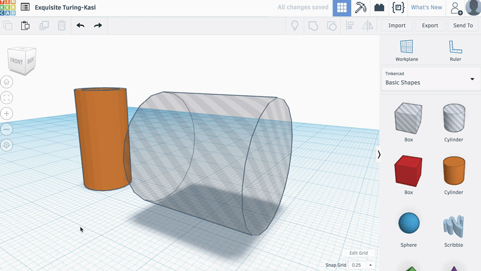
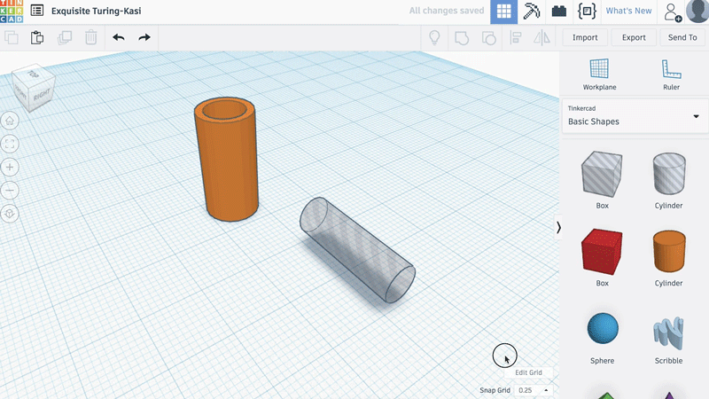
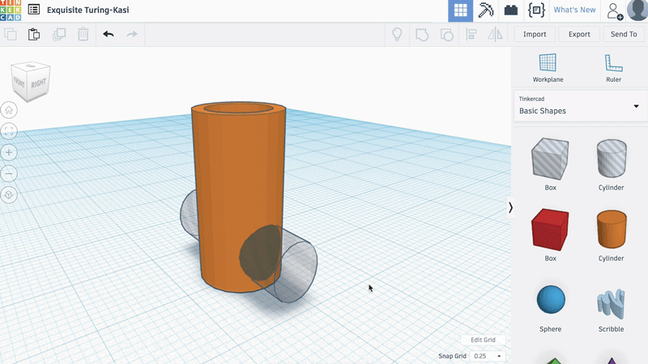

3. Add some vent to refresh motor
Therefore, take the hollow cylinder of the side panel.
Thanks to the double curved arrows, rotate it to 90°.
Then, you need to give it a height of 7 mm, a width of 6 mm and a depth of 20 mm.
With the black arrow, move it 1 mm up.

With the "align" tool, place the hollow cylinder in the center of the orange cylinder.

Duplicate the hollow cylinder with the button at the top left (or the Ctrl + D key) and with the black arrow, move it 10 mm up.

Select the three cylinders and click on "Group" again.
The orange cylinder is now pierced by four ovals.